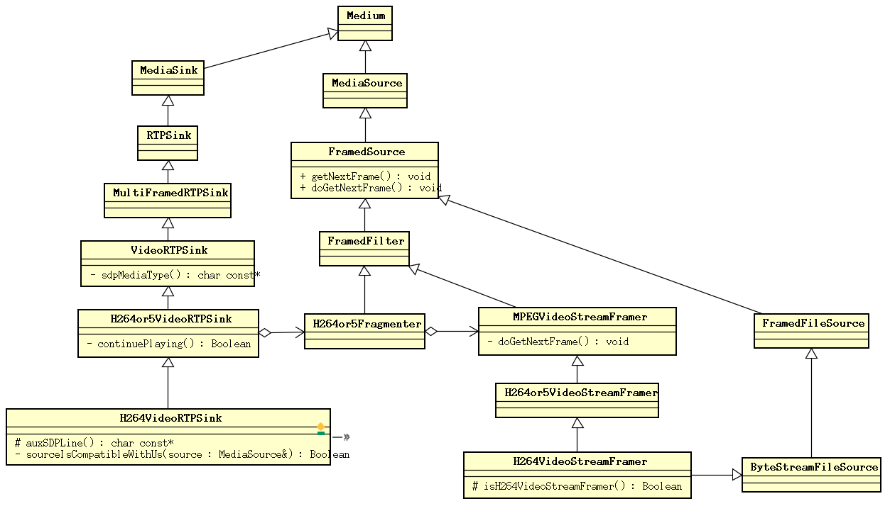

1. Live555 source code analysis: play start
Posted on 2017-09-08 | In live555
This article analyzes the process of streaming media playback in live555 and
data transmission through RTP/RTCP.
As we live555 source code analysis: sub-session SETUP seen, play a streaming media sub-session start from StreamState::startPlaying complete:
void OnDemandServerMediaSubsession::startStream(unsigned clientSessionId,
void* streamToken,
TaskFunc* rtcpRRHandler,
void* rtcpRRHandlerClientData,
unsigned short& rtpSeqNum,
unsigned& rtpTimestamp,
ServerRequestAlternativeByteHandler* serverRequestAlternativeByteHandler,
void* serverRequestAlternativeByteHandlerClientData) {
StreamState* streamState = (StreamState*)streamToken;
Destinations* destinations
= (Destinations*)(fDestinationsHashTable->Lookup((char const*)clientSessionId));
if (streamState != NULL) {
streamState->startPlaying(destinations, clientSessionId,
rtcpRRHandler, rtcpRRHandlerClientData,
serverRequestAlternativeByteHandler, serverRequestAlternativeByteHandlerClientData);
RTPSink* rtpSink = streamState->rtpSink(); // alias
if (rtpSink != NULL) {
rtpSeqNum = rtpSink->currentSeqNo();
rtpTimestamp = rtpSink->presetNextTimestamp();
}
}
}
void StreamState
::startPlaying(Destinations* dests, unsigned clientSessionId,
TaskFunc* rtcpRRHandler, void* rtcpRRHandlerClientData,
ServerRequestAlternativeByteHandler* serverRequestAlternativeByteHandler,
void* serverRequestAlternativeByteHandlerClientData) {
if (dests == NULL) return;
if (fRTCPInstance == NULL && fRTPSink != NULL) {
// Create (and start) a 'RTCP instance' for this RTP sink:
fRTCPInstance = fMaster.createRTCP(fRTCPgs, fTotalBW, (unsigned char*)fMaster.fCNAME, fRTPSink);
// Note: This starts RTCP running automatically
fRTCPInstance->setAppHandler(fMaster.fAppHandlerTask, fMaster.fAppHandlerClientData);
}
if (dests->isTCP) {
// Change RTP and RTCP to use the TCP socket instead of UDP:
if (fRTPSink != NULL) {
fRTPSink->addStreamSocket(dests->tcpSocketNum, dests->rtpChannelId);
RTPInterface::setServerRequestAlternativeByteHandler(fRTPSink->envir(), dests->tcpSocketNum,
serverRequestAlternativeByteHandler, serverRequestAlternativeByteHandlerClientData);
// So that we continue to handle RTSP commands from the client
}
if (fRTCPInstance != NULL) {
fRTCPInstance->addStreamSocket(dests->tcpSocketNum, dests->rtcpChannelId);
fRTCPInstance->setSpecificRRHandler(dests->tcpSocketNum, dests->rtcpChannelId,
rtcpRRHandler, rtcpRRHandlerClientData);
}
} else {
// Tell the RTP and RTCP 'groupsocks' about this destination
// (in case they don't already have it):
if (fRTPgs != NULL) fRTPgs->addDestination(dests->addr, dests->rtpPort, clientSessionId);
if (fRTCPgs != NULL && !(fRTCPgs == fRTPgs && dests->rtcpPort.num() == dests->rtpPort.num())) {
fRTCPgs->addDestination(dests->addr, dests->rtcpPort, clientSessionId);
}
if (fRTCPInstance != NULL) {
fRTCPInstance->setSpecificRRHandler(dests->addr.s_addr, dests->rtcpPort,
rtcpRRHandler, rtcpRRHandlerClientData);
}
}
if (fRTCPInstance != NULL) {
// Hack: Send an initial RTCP "SR" packet, before the initial RTP packet, so that receivers will (likely) be able to
// get RTCP-synchronized presentation times immediately:
fRTCPInstance->sendReport();
}
if (!fAreCurrentlyPlaying && fMediaSource != NULL) {
if (fRTPSink != NULL) {
fRTPSink->startPlaying(*fMediaSource, afterPlayingStreamState, this);
fAreCurrentlyPlaying = True;
} else if (fUDPSink != NULL) {
fUDPSink->startPlaying(*fMediaSource, afterPlayingStreamState, this);
fAreCurrentlyPlaying = True;
}
}
}
In this function, first create it when RTCPInstance has not been created yet:
RTCPInstance* OnDemandServerMediaSubsession
::createRTCP(Groupsock* RTCPgs, unsigned totSessionBW, /* in kbps */
unsigned char const* cname, RTPSink* sink) {
// Default implementation; may be redefined by subclasses:
return RTCPInstance::createNew(envir(), RTCPgs, totSessionBW, cname, sink, NULL/*we're a server*/);
}
Ignore the RTP/RTCP packet to go to TCP. Then StreamState::startPlaying() do the
right RTP and RTCP of groupsock some settings, add the destination address is a
them and did some set RTCPInstance:
} else {
// Tell the RTP and RTCP 'groupsocks' about this destination
// (in case they don't already have it):
if (fRTPgs != NULL) fRTPgs->addDestination(dests->addr, dests->rtpPort, clientSessionId);
if (fRTCPgs != NULL && !(fRTCPgs == fRTPgs && dests->rtcpPort.num() == dests->rtpPort.num())) {
fRTCPgs->addDestination(dests->addr, dests->rtcpPort, clientSessionId);
}
if (fRTCPInstance != NULL) {
fRTCPInstance->setSpecificRRHandler(dests->addr.s_addr, dests->rtcpPort,
rtcpRRHandler, rtcpRRHandlerClientData);
}
}
After StreamState::startPlaying() issuing a RTCP packet.
if (fRTCPInstance != NULL) {
// Hack: Send an initial RTCP "SR" packet, before the initial RTP packet, so that receivers will (likely) be able to
// get RTCP-synchronized presentation times immediately:
fRTCPInstance->sendReport();
}
fUDPSink For the case where the streaming mode is RAW UDP, the case of this
streaming mode is ignored. Finally executed MediaSink::startPlaying() and set the
flag fAreCurrentlyPlaying to indicate that streaming playback has started.
1.1. RTP packet transmission
Let's look at how the RTP package is sent out. MediaSink::startPlaying() The
function is defined as follows:
Boolean MediaSink::startPlaying(MediaSource& source,
afterPlayingFunc* afterFunc,
void* afterClientData) {
// Make sure we're not already being played:
if (fSource != NULL) {
envir().setResultMsg("This sink is already being played");
return False;
}
// Make sure our source is compatible:
if (!sourceIsCompatibleWithUs(source)) {
envir().setResultMsg("MediaSink::startPlaying(): source is not compatible!");
return False;
}
fSource = (FramedSource*)&source;
fAfterFunc = afterFunc;
fAfterClientData = afterClientData;
return continuePlaying();
}
In this function, the stored passed callback parameters and callback, then
execution continuePlaying(), continuePlaying() is a pure virtual function, which
is implemented by the MediaSink subclasses H264or5VideoRTPSink to achieve:
Boolean H264or5VideoRTPSink::continuePlaying() {
// First, check whether we have a 'fragmenter' class set up yet.
// If not, create it now:
if (fOurFragmenter == NULL) {
fOurFragmenter = new H264or5Fragmenter(fHNumber, envir(), fSource, OutPacketBuffer::maxSize,
ourMaxPacketSize() - 12/*RTP hdr size*/);
} else {
fOurFragmenter->reassignInputSource(fSource);
}
fSource = fOurFragmenter;
// Then call the parent class's implementation:
return MultiFramedRTPSink::continuePlaying();
}
In this class, it is primarily H264or5Fragmenter provided streaming media data
source, and fSource set H264or5Fragmenter. Here, MultiFramedRTPSink holding the
streaming data source FramedSource originally in
the H264VideoFileServerMediaSubsession created H264VideoStreamFramer becomes
a H264or5Fragmenter, and H264or5Fragmenter is encapsulated H264VideoStreamFramer.
Then H264or5VideoRTPSink::continuePlaying() perform MultiFramedRTPSink::continuePlaying() further processing.
Boolean MultiFramedRTPSink::continuePlaying() {
// Send the first packet.
// (This will also schedule any future sends.)
buildAndSendPacket(True);
return True;
}
. . . . . .
void MultiFramedRTPSink::buildAndSendPacket(Boolean isFirstPacket) {
nextTask() = NULL;
fIsFirstPacket = isFirstPacket;
// Set up the RTP header:
unsigned rtpHdr = 0x80000000; // RTP version 2; marker ('M') bit not set (by default; it can be set later)
rtpHdr |= (fRTPPayloadType<<16);
rtpHdr |= fSeqNo; // sequence number
fOutBuf->enqueueWord(rtpHdr);
// Note where the RTP timestamp will go.
// (We can't fill this in until we start packing payload frames.)
fTimestampPosition = fOutBuf->curPacketSize();
fOutBuf->skipBytes(4); // leave a hole for the timestamp
fOutBuf->enqueueWord(SSRC());
// Allow for a special, payload-format-specific header following the
// RTP header:
fSpecialHeaderPosition = fOutBuf->curPacketSize();
fSpecialHeaderSize = specialHeaderSize();
fOutBuf->skipBytes(fSpecialHeaderSize);
// Begin packing as many (complete) frames into the packet as we can:
fTotalFrameSpecificHeaderSizes = 0;
fNoFramesLeft = False;
fNumFramesUsedSoFar = 0;
packFrame();
}
MultiFramedRTPSink::continuePlaying() Execution MultiFramedRTPSink::buildAndSendPacket(). And MultiFramedRTPSink::buildAndSendPacket() it is in the output buffer constructed RTP header, header fields for which
temporarily can not be accurately obtained with space. Then
called MultiFramedRTPSink::packFrame().
void MultiFramedRTPSink::packFrame() {
// Get the next frame.
// First, skip over the space we'll use for any frame-specific header:
fCurFrameSpecificHeaderPosition = fOutBuf->curPacketSize();
fCurFrameSpecificHeaderSize = frameSpecificHeaderSize();
fOutBuf->skipBytes(fCurFrameSpecificHeaderSize);
fTotalFrameSpecificHeaderSizes += fCurFrameSpecificHeaderSize;
// See if we have an overflow frame that was too big for the last pkt
if (fOutBuf->haveOverflowData()) {
// Use this frame before reading a new one from the source
unsigned frameSize = fOutBuf->overflowDataSize();
struct timeval presentationTime = fOutBuf->overflowPresentationTime();
unsigned durationInMicroseconds = fOutBuf->overflowDurationInMicroseconds();
fOutBuf->useOverflowData();
afterGettingFrame1(frameSize, 0, presentationTime, durationInMicroseconds);
} else {
// Normal case: we need to read a new frame from the source
if (fSource == NULL) return;
fSource->getNextFrame(fOutBuf->curPtr(), fOutBuf->totalBytesAvailable(),
afterGettingFrame, this, ourHandleClosure, this);
}
}
MultiFramedRTPSink::packFrame() Of FramedSource the getNextFrame() obtained frame
data, and after obtaining informed frame data.
void FramedSource::getNextFrame(unsigned char* to, unsigned maxSize,
afterGettingFunc* afterGettingFunc,
void* afterGettingClientData,
onCloseFunc* onCloseFunc,
void* onCloseClientData) {
// Make sure we're not already being read:
if (fIsCurrentlyAwaitingData) {
envir() << "FramedSource[" << this << "]::getNextFrame(): attempting to read more than once at the same time!\n";
envir().internalError();
}
fTo = to;
fMaxSize = maxSize;
fNumTruncatedBytes = 0; // by default; could be changed by doGetNextFrame()
fDurationInMicroseconds = 0; // by default; could be changed by doGetNextFrame()
fAfterGettingFunc = afterGettingFunc;
fAfterGettingClientData = afterGettingClientData;
fOnCloseFunc = onCloseFunc;
fOnCloseClientData = onCloseClientData;
fIsCurrentlyAwaitingData = True;
doGetNextFrame();
}
This function is mainly used to FramedSource set the media stream data to be read
where, how much their own address, and a callback function can be read. And
ultimately perform doGetNextFrame() the read data.
Final data will be ByteStreamFileSource the doGetNextFrame() implementation of
scheduling tasks to read, and read from the file.
#0 ByteStreamFileSource::doGetNextFrame (this=0x6d8f10) at ByteStreamFileSource.cpp:96
#1 0x000000000043004c in FramedSource::getNextFrame (this=0x6d8f10, to=0x6da9c0 "(\243\203\367\377\177", maxSize=150000,
afterGettingFunc=0x46f6c8 <StreamParser::afterGettingBytes(void*, unsigned int, unsigned int, timeval, unsigned int)>,
afterGettingClientData=0x6d91b0, onCloseFunc=0x46f852 <StreamParser::onInputClosure(void*)>, onCloseClientData=0x6d91b0) at FramedSource.cpp:78
-------------------------------------------------------------------------------------------------------------------------------------
#2 0x000000000046f69c in StreamParser::ensureValidBytes1 (this=0x6d91b0, numBytesNeeded=4) at StreamParser.cpp:159
#3 0x00000000004343e5 in StreamParser::ensureValidBytes (this=0x6d91b0, numBytesNeeded=4) at StreamParser.hh:118
#4 0x0000000000434179 in StreamParser::test4Bytes (this=0x6d91b0) at StreamParser.hh:54
#5 0x0000000000471b85 in H264or5VideoStreamParser::parse (this=0x6d91b0) at H264or5VideoStreamFramer.cpp:951
#6 0x000000000043510f in MPEGVideoStreamFramer::continueReadProcessing (this=0x6d9000) at MPEGVideoStreamFramer.cpp:159
#7 0x0000000000435077 in MPEGVideoStreamFramer::doGetNextFrame (this=0x6d9000) at MPEGVideoStreamFramer.cpp:142
#8 0x000000000043004c in FramedSource::getNextFrame (this=0x6d9000, to=0x748d61 "", maxSize=100000,
afterGettingFunc=0x474cd2 <H264or5Fragmenter::afterGettingFrame(void*, unsigned int, unsigned int, timeval, unsigned int)>,
afterGettingClientData=0x700300, onCloseFunc=0x4300c6 <FramedSource::handleClosure(void*)>, onCloseClientData=0x700300) at FramedSource.cpp:78
-------------------------------------------------------------------------------------------------------------------------------------
#9 0x000000000047480a in H264or5Fragmenter::doGetNextFrame (this=0x700300) at H264or5VideoRTPSink.cpp:181
#10 0x000000000043004c in FramedSource::getNextFrame (this=0x700300, to=0x7304ec "", maxSize=100452,
afterGettingFunc=0x45af82 <MultiFramedRTPSink::afterGettingFrame(void*, unsigned int, unsigned int, timeval, unsigned int)>,
afterGettingClientData=0x6d92e0, onCloseFunc=0x45b96c <MultiFramedRTPSink::ourHandleClosure(void*)>, onCloseClientData=0x6d92e0) at FramedSource.cpp:78
-------------------------------------------------------------------------------------------------------------------------------------
#11 0x000000000045af61 in MultiFramedRTPSink::packFrame (this=0x6d92e0) at MultiFramedRTPSink.cpp:224
#12 0x000000000045adae in MultiFramedRTPSink::buildAndSendPacket (this=0x6d92e0, isFirstPacket=1 '\001') at MultiFramedRTPSink.cpp:199
#13 0x000000000045abed in MultiFramedRTPSink::continuePlaying (this=0x6d92e0) at MultiFramedRTPSink.cpp:159
-------------------------------------------------------------------------------------------------------------------------------------
#14 0x000000000047452a in H264or5VideoRTPSink::continuePlaying (this=0x6d92e0) at H264or5VideoRTPSink.cpp:127
#15 0x0000000000405d2a in MediaSink::startPlaying (this=0x6d92e0, source=..., afterFunc=0x4621f4 <afterPlayingStreamState(void*)>,
afterClientData=0x6d95b0) at MediaSink.cpp:78
#16 0x00000000004626ea in StreamState::startPlaying (this=0x6d95b0, dests=0x6d9620, clientSessionId=1584618840,
rtcpRRHandler=0x407280 <GenericMediaServer::ClientSession::noteClientLiveness(GenericMediaServer::ClientSession*)>, rtcpRRHandlerClientData=0x70ba40,
serverRequestAlternativeByteHandler=0x4093a6 <RTSPServer::RTSPClientConnection::handleAlternativeRequestByte(void*, unsigned char)>,
serverRequestAlternativeByteHandlerClientData=0x6ce910) at OnDemandServerMediaSubsession.cpp:576
#17 0x000000000046138d in OnDemandServerMediaSubsession::startStream (this=0x6d8710, clientSessionId=1584618840, streamToken=0x6d95b0,
rtcpRRHandler=0x407280 <GenericMediaServer::ClientSession::noteClientLiveness(GenericMediaServer::ClientSession*)>, rtcpRRHandlerClientData=0x70ba40,
rtpSeqNum=@0x7fffffffcd76: 0, rtpTimestamp=@0x7fffffffcdc0: 0,
serverRequestAlternativeByteHandler=0x4093a6 <RTSPServer::RTSPClientConnection::handleAlternativeRequestByte(void*, unsigned char)>,
serverRequestAlternativeByteHandlerClientData=0x6ce910) at OnDemandServerMediaSubsession.cpp:223
This call stack is deep. It may seem confusing. Live555 actually employed
decorator pattern design FramedSource, a FramedSource may be packaged
another FramedSource, and provide some additional features, or to optimize
performance, or for data analysis or the like.
live555 in many FramedSource relationships between classes probably as follows:

Above the call stack, mainly based on FramedSource packaging relationship,
divided by a dotted line into several different stages.
In ByteStreamFileSource the doGetNextFrame() middle, task scheduling reads:
void ByteStreamFileSource::doGetNextFrame() {
if (feof(fFid) || ferror(fFid) || (fLimitNumBytesToStream && fNumBytesToStream == 0)) {
handleClosure();
return;
}
#ifdef READ_FROM_FILES_SYNCHRONOUSLY
doReadFromFile();
#else
if (!fHaveStartedReading) {
// Await readable data from the file:
envir().taskScheduler().turnOnBackgroundReadHandling(fileno(fFid),
(TaskScheduler::BackgroundHandlerProc*)&fileReadableHandler, this);
fHaveStartedReading = True;
}
#endif
}
ByteStreamFileSource::fileReadableHandler() Read the streaming content and
notify the caller:
void FramedSource::afterGetting(FramedSource* source) {
source->nextTask() = NULL;
source->fIsCurrentlyAwaitingData = False;
// indicates that we can be read again
// Note that this needs to be done here, in case the "fAfterFunc"
// called below tries to read another frame (which it usually will)
if (source->fAfterGettingFunc != NULL) {
(*(source->fAfterGettingFunc))(source->fAfterGettingClientData,
source->fFrameSize, source->fNumTruncatedBytes,
source->fPresentationTime,
source->fDurationInMicroseconds);
}
}
. . . . . .
void ByteStreamFileSource::fileReadableHandler(ByteStreamFileSource* source, int /*mask*/) {
if (!source->isCurrentlyAwaitingData()) {
source->doStopGettingFrames(); // we're not ready for the data yet
return;
}
source->doReadFromFile();
}
void ByteStreamFileSource::doReadFromFile() {
// Try to read as many bytes as will fit in the buffer provided (or "fPreferredFrameSize" if less)
if (fLimitNumBytesToStream && fNumBytesToStream < (u_int64_t)fMaxSize) {
fMaxSize = (unsigned)fNumBytesToStream;
}
if (fPreferredFrameSize > 0 && fPreferredFrameSize < fMaxSize) {
fMaxSize = fPreferredFrameSize;
}
#ifdef READ_FROM_FILES_SYNCHRONOUSLY
fFrameSize = fread(fTo, 1, fMaxSize, fFid);
#else
if (fFidIsSeekable) {
fFrameSize = fread(fTo, 1, fMaxSize, fFid);
} else {
// For non-seekable files (e.g., pipes), call "read()" rather than "fread()", to ensure that the read doesn't block:
fFrameSize = read(fileno(fFid), fTo, fMaxSize);
}
#endif
if (fFrameSize == 0) {
handleClosure();
return;
}
fNumBytesToStream -= fFrameSize;
// Set the 'presentation time':
if (fPlayTimePerFrame > 0 && fPreferredFrameSize > 0) {
if (fPresentationTime.tv_sec == 0 && fPresentationTime.tv_usec == 0) {
// This is the first frame, so use the current time:
gettimeofday(&fPresentationTime, NULL);
} else {
// Increment by the play time of the previous data:
unsigned uSeconds = fPresentationTime.tv_usec + fLastPlayTime;
fPresentationTime.tv_sec += uSeconds/1000000;
fPresentationTime.tv_usec = uSeconds%1000000;
}
// Remember the play time of this data:
fLastPlayTime = (fPlayTimePerFrame*fFrameSize)/fPreferredFrameSize;
fDurationInMicroseconds = fLastPlayTime;
} else {
// We don't know a specific play time duration for this data,
// so just record the current time as being the 'presentation time':
gettimeofday(&fPresentationTime, NULL);
}
// Inform the reader that he has data:
#ifdef READ_FROM_FILES_SYNCHRONOUSLY
// To avoid possible infinite recursion, we need to return to the event loop to do this:
nextTask() = envir().taskScheduler().scheduleDelayedTask(0,
(TaskFunc*)FramedSource::afterGetting, this);
#else
// Because the file read was done from the event loop, we can call the
// 'after getting' function directly, without risk of infinite recursion:
FramedSource::afterGetting(this);
#endif
}
After the data is read, you MultiFramedRTPSink will be notified:
#0 MultiFramedRTPSink::afterGettingFrame (clientData=0x6d92e0, numBytesRead=18, numTruncatedBytes=0, presentationTime=...,
durationInMicroseconds=0) at MultiFramedRTPSink.cpp:233
---------------------------------------------------------------------------------------------------------------------------
#1 0x00000000004300c2 in FramedSource::afterGetting (source=0x7002c0) at FramedSource.cpp:92
#2 0x0000000000474ca6 in H264or5Fragmenter::doGetNextFrame (this=0x7002c0) at H264or5VideoRTPSink.cpp:263
#3 0x0000000000474dac in H264or5Fragmenter::afterGettingFrame1 (this=0x7002c0, frameSize=18, numTruncatedBytes=0, presentationTime=...,
durationInMicroseconds=0) at H264or5VideoRTPSink.cpp:292
#4 0x0000000000474d25 in H264or5Fragmenter::afterGettingFrame (clientData=0x7002c0, frameSize=18, numTruncatedBytes=0, presentationTime=...,
durationInMicroseconds=0) at H264or5VideoRTPSink.cpp:279
---------------------------------------------------------------------------------------------------------------------------
#5 0x00000000004300c2 in FramedSource::afterGetting (source=0x6d9000) at FramedSource.cpp:92
#6 0x00000000004351ea in MPEGVideoStreamFramer::continueReadProcessing (this=0x6d9000) at MPEGVideoStreamFramer.cpp:179
#7 0x00000000004350da in MPEGVideoStreamFramer::continueReadProcessing (clientData=0x6d9000) at MPEGVideoStreamFramer.cpp:155
#8 0x000000000046f84f in StreamParser::afterGettingBytes1 (this=0x6d91b0, numBytesRead=150000, presentationTime=...) at StreamParser.cpp:191
#9 0x000000000046f718 in StreamParser::afterGettingBytes (clientData=0x6d91b0, numBytesRead=150000, presentationTime=...)
at StreamParser.cpp:170
---------------------------------------------------------------------------------------------------------------------------
#10 0x00000000004300c2 in FramedSource::afterGetting (source=0x6d8f10) at FramedSource.cpp:92
#11 0x0000000000430c2c in ByteStreamFileSource::doReadFromFile (this=0x6d8f10) at ByteStreamFileSource.cpp:182
#12 0x00000000004309cb in ByteStreamFileSource::fileReadableHandler (source=0x6d8f10) at ByteStreamFileSource.cpp:126
We also will callback call stack, according to FramedSource the package
relationship, divided into several stages, different stages divided by dotted
lines.
MultiFramedRTPSink::afterGettingFrame() The function is defined as follows:
void MultiFramedRTPSink
::afterGettingFrame(void* clientData, unsigned numBytesRead,
unsigned numTruncatedBytes,
struct timeval presentationTime,
unsigned durationInMicroseconds) {
MultiFramedRTPSink* sink = (MultiFramedRTPSink*)clientData;
sink->afterGettingFrame1(numBytesRead, numTruncatedBytes,
presentationTime, durationInMicroseconds);
}
In this function call afterGettingFrame1(), afterGettingFrame1() it will be
required to
call sendPacketIfNecessary(). MultiFramedRTPSink::sendPacketIfNecessary() The
definition is as follows:
void MultiFramedRTPSink::sendPacketIfNecessary() {
if (fNumFramesUsedSoFar > 0) {
// Send the packet:
#ifdef TEST_LOSS
if ((our_random()%10) != 0) // simulate 10% packet loss #####
#endif
if (!fRTPInterface.sendPacket(fOutBuf->packet(), fOutBuf->curPacketSize())) {
// if failure handler has been specified, call it
if (fOnSendErrorFunc != NULL) (*fOnSendErrorFunc)(fOnSendErrorData);
}
++fPacketCount;
fTotalOctetCount += fOutBuf->curPacketSize();
fOctetCount += fOutBuf->curPacketSize()
- rtpHeaderSize - fSpecialHeaderSize - fTotalFrameSpecificHeaderSizes;
++fSeqNo; // for next time
}
if (fOutBuf->haveOverflowData()
&& fOutBuf->totalBytesAvailable() > fOutBuf->totalBufferSize()/2) {
// Efficiency hack: Reset the packet start pointer to just in front of
// the overflow data (allowing for the RTP header and special headers),
// so that we probably don't have to "memmove()" the overflow data
// into place when building the next packet:
unsigned newPacketStart = fOutBuf->curPacketSize()
- (rtpHeaderSize + fSpecialHeaderSize + frameSpecificHeaderSize());
fOutBuf->adjustPacketStart(newPacketStart);
} else {
// Normal case: Reset the packet start pointer back to the start:
fOutBuf->resetPacketStart();
}
fOutBuf->resetOffset();
fNumFramesUsedSoFar = 0;
if (fNoFramesLeft) {
// We're done:
onSourceClosure();
} else {
// We have more frames left to send. Figure out when the next frame
// is due to start playing, then make sure that we wait this long before
// sending the next packet.
struct timeval timeNow;
gettimeofday(&timeNow, NULL);
int secsDiff = fNextSendTime.tv_sec - timeNow.tv_sec;
int64_t uSecondsToGo = secsDiff*1000000 + (fNextSendTime.tv_usec - timeNow.tv_usec);
if (uSecondsToGo < 0 || secsDiff < 0) { // sanity check: Make sure that the time-to-delay is non-negative:
uSecondsToGo = 0;
}
// Delay this amount of time:
nextTask() = envir().taskScheduler().scheduleDelayedTask(uSecondsToGo, (TaskFunc*)sendNext, this);
}
}
In MultiFramedRTPSink::sendPacketIfNecessary(), the frame data is sent. And if
the streaming data transmission has not ended, then, after a data transmission
is complete, the timer will dispatch a mission MultiFramedRTPSink::sendNext() to
send the data frame again.
MultiFramedRTPSink::sendNext() Performing MultiFramedRTPSink::continuePlaying() a
similar process, and acquires the next frame transmission.
void MultiFramedRTPSink::sendNext(void* firstArg) {
MultiFramedRTPSink* sink = (MultiFramedRTPSink*)firstArg;
sink->buildAndSendPacket(False);
}
Of course, not every time you send frame data, you need to get the data directly
from the streaming source. In StreamParser the judgment will do, the frame data
when needed, it will initiate a streaming media file is read. If you don't need
to read the streaming data from the file, you will call back directly:
#0 MultiFramedRTPSink::sendPacketIfNecessary (this=0x702140) at MultiFramedRTPSink.cpp:365
#1 0x000000000045b5a4 in MultiFramedRTPSink::afterGettingFrame1 (this=0x702140, frameSize=1444, numTruncatedBytes=0, presentationTime=...,
durationInMicroseconds=40000) at MultiFramedRTPSink.cpp:347
#2 0x000000000045afd5 in MultiFramedRTPSink::afterGettingFrame (clientData=0x702140, numBytesRead=1444, numTruncatedBytes=0,
presentationTime=..., durationInMicroseconds=40000) at MultiFramedRTPSink.cpp:235
#3 0x00000000004300c2 in FramedSource::afterGetting (source=0x7036d0) at FramedSource.cpp:92
------------------------------------------------------------------------------------------------------------------------------------
#4 0x0000000000474ca6 in H264or5Fragmenter::doGetNextFrame (this=0x7036d0) at H264or5VideoRTPSink.cpp:263
#5 0x0000000000474dac in H264or5Fragmenter::afterGettingFrame1 (this=0x7036d0, frameSize=53527, numTruncatedBytes=0, presentationTime=...,
durationInMicroseconds=40000) at H264or5VideoRTPSink.cpp:292
#6 0x0000000000474d25 in H264or5Fragmenter::afterGettingFrame (clientData=0x7036d0, frameSize=53527, numTruncatedBytes=0,
presentationTime=..., durationInMicroseconds=40000) at H264or5VideoRTPSink.cpp:279
#7 0x00000000004300c2 in FramedSource::afterGetting (source=0x701e20) at FramedSource.cpp:92
------------------------------------------------------------------------------------------------------------------------------------
#8 0x00000000004351ea in MPEGVideoStreamFramer::continueReadProcessing (this=0x701e20) at MPEGVideoStreamFramer.cpp:179
#9 0x0000000000435077 in MPEGVideoStreamFramer::doGetNextFrame (this=0x701e20) at MPEGVideoStreamFramer.cpp:142
------------------------------------------------------------------------------------------------------------------------------------
#10 0x000000000043004c in FramedSource::getNextFrame (this=0x701e20, to=0x7c3091 "\205\270@\367\017\204?\017", <incomplete sequence \340>,
maxSize=100000,
afterGettingFunc=0x474cd2 <H264or5Fragmenter::afterGettingFrame(void*, unsigned int, unsigned int, timeval, unsigned int)>,
afterGettingClientData=0x7036d0, onCloseFunc=0x4300c6 <FramedSource::handleClosure(void*)>, onCloseClientData=0x7036d0)
at FramedSource.cpp:78
#11 0x000000000047480a in H264or5Fragmenter::doGetNextFrame (this=0x7036d0) at H264or5VideoRTPSink.cpp:181
------------------------------------------------------------------------------------------------------------------------------------
#12 0x000000000043004c in FramedSource::getNextFrame (this=0x7036d0, to=0x7aa81c "|\205\270@\367\017\204?\017", <incomplete sequence \340>,
maxSize=100452,
afterGettingFunc=0x45af82 <MultiFramedRTPSink::afterGettingFrame(void*, unsigned int, unsigned int, timeval, unsigned int)>,
afterGettingClientData=0x702140, onCloseFunc=0x45b96c <MultiFramedRTPSink::ourHandleClosure(void*)>, onCloseClientData=0x702140)
at FramedSource.cpp:78
#13 0x000000000045af61 in MultiFramedRTPSink::packFrame (this=0x702140) at MultiFramedRTPSink.cpp:224
#14 0x000000000045adae in MultiFramedRTPSink::buildAndSendPacket (this=0x702140, isFirstPacket=0 '\000') at MultiFramedRTPSink.cpp:199
#15 0x000000000045b969 in MultiFramedRTPSink::sendNext (firstArg=0x702140) at MultiFramedRTPSink.cpp:422
#16 0x000000000047f165 in AlarmHandler::handleTimeout (this=0x7038a0) at BasicTaskScheduler0.cpp:34
#17 0x000000000047d268 in DelayQueue::handleAlarm (this=0x6cdc28) at DelayQueue.cpp:187
#18 0x000000000047c196 in BasicTaskScheduler::SingleStep (this=0x6cdc20, maxDelayTime=0) at BasicTaskScheduler.cpp:212
Summarize the sending process of RTP packets:
OnDemandServerMediaSubsession In execution startStream(), it will launch a
streaming media file to read the task, read the file from the
work ByteStreamFileSource of doReadFromFile() the Executive.
After the file has read some data, MultiFramedRTPSink a callback is
obtained afterGetting(), in which the frame data is sent.
MultiFramedRTPSink In the callback, if the streaming media data has not been
read yet, a timer task is scheduled, and the action of acquiring the frame
data is initiated again after a period of time.
Repeat steps 2 and 3 until all the data has been sent.
1.2. RTCP packet reception
StreamState::startPlaying() By OnDemandServerMediaSubsession::createRTCP() creation RTCPInstance:
RTCPInstance* OnDemandServerMediaSubsession
::createRTCP(Groupsock* RTCPgs, unsigned totSessionBW, /* in kbps */
unsigned char const* cname, RTPSink* sink) {
fprintf(stderr, "OnDemandServerMediaSubsession::createRTCP().\n");
// Default implementation; may be redefined by subclasses:
return RTCPInstance::createNew(envir(), RTCPgs, totSessionBW, cname, sink, NULL/*we're a server*/);
}
OnDemandServerMediaSubsession::createRTCP() Through
the RTCPInstance::createNew() creation:
RTCPInstance::RTCPInstance(UsageEnvironment& env, Groupsock* RTCPgs,
unsigned totSessionBW,
unsigned char const* cname,
RTPSink* sink, RTPSource* source,
Boolean isSSMSource)
: Medium(env), fRTCPInterface(this, RTCPgs), fTotSessionBW(totSessionBW),
fSink(sink), fSource(source), fIsSSMSource(isSSMSource),
fCNAME(RTCP_SDES_CNAME, cname), fOutgoingReportCount(1),
fAveRTCPSize(0), fIsInitial(1), fPrevNumMembers(0),
fLastSentSize(0), fLastReceivedSize(0), fLastReceivedSSRC(0),
fTypeOfEvent(EVENT_UNKNOWN), fTypeOfPacket(PACKET_UNKNOWN_TYPE),
fHaveJustSentPacket(False), fLastPacketSentSize(0),
fByeHandlerTask(NULL), fByeHandlerClientData(NULL),
fSRHandlerTask(NULL), fSRHandlerClientData(NULL),
fRRHandlerTask(NULL), fRRHandlerClientData(NULL),
fSpecificRRHandlerTable(NULL),
fAppHandlerTask(NULL), fAppHandlerClientData(NULL) {
#ifdef DEBUG
fprintf(stderr, "RTCPInstance[%p]::RTCPInstance()\n", this);
#endif
if (fTotSessionBW == 0) { // not allowed!
env << "RTCPInstance::RTCPInstance error: totSessionBW parameter should not be zero!\n";
fTotSessionBW = 1;
}
if (isSSMSource) RTCPgs->multicastSendOnly(); // don't receive multicast
double timeNow = dTimeNow();
fPrevReportTime = fNextReportTime = timeNow;
fKnownMembers = new RTCPMemberDatabase(*this);
fInBuf = new unsigned char[maxRTCPPacketSize];
if (fKnownMembers == NULL || fInBuf == NULL) return;
fNumBytesAlreadyRead = 0;
fOutBuf = new OutPacketBuffer(preferredRTCPPacketSize, maxRTCPPacketSize, maxRTCPPacketSize);
if (fOutBuf == NULL) return;
if (fSource != NULL && fSource->RTPgs() == RTCPgs) {
// We're receiving RTCP reports that are multiplexed with RTP, so ask the RTP source
// to give them to us:
fSource->registerForMultiplexedRTCPPackets(this);
} else {
// Arrange to handle incoming reports from the network:
TaskScheduler::BackgroundHandlerProc* handler
= (TaskScheduler::BackgroundHandlerProc*)&incomingReportHandler;
fRTCPInterface.startNetworkReading(handler);
}
// Send our first report.
fTypeOfEvent = EVENT_REPORT;
onExpire(this);
}
. . . . . .
RTCPInstance* RTCPInstance::createNew(UsageEnvironment& env, Groupsock* RTCPgs,
unsigned totSessionBW,
unsigned char const* cname,
RTPSink* sink, RTPSource* source,
Boolean isSSMSource) {
return new RTCPInstance(env, RTCPgs, totSessionBW, cname, sink, source,
isSSMSource);
}
It can be seen in RTCPInstance the constructor,
call RTPInterface::startNetworkReading() registers a callback:
void RTPInterface
::startNetworkReading(TaskScheduler::BackgroundHandlerProc* handlerProc) {
// Normal case: Arrange to read UDP packets:
envir().taskScheduler().
turnOnBackgroundReadHandling(fGS->socketNum(), handlerProc, fOwner);
// Also, receive RTP over TCP, on each of our TCP connections:
fReadHandlerProc = handlerProc;
for (tcpStreamRecord* streams = fTCPStreams; streams != NULL;
streams = streams->fNext) {
// Get a socket descriptor for "streams->fStreamSocketNum":
SocketDescriptor* socketDescriptor = lookupSocketDescriptor(envir(), streams->fStreamSocketNum);
// Tell it about our subChannel:
socketDescriptor->registerRTPInterface(streams->fStreamChannelId, this);
}
}
In RTPInterface::startNetworkReading() the RTCP will be registered in the socket
and event handlers on the socket to TaskScheduler. live555 It is in this way, be
notified when there is RTCP packet arrives, and
by RTCPInstance::incomingReportHandler() to handle RTCP packets.
1.3. RTCP packet transmission
RTCP packets as required by the RTCPInstance::sendReport() transmission function
and the like:
void RTCPInstance::sendReport() {
#ifdef DEBUG
fprintf(stderr, "sending REPORT\n");
#endif
// Begin by including a SR and/or RR report:
if (!addReport()) return;
// Then, include a SDES:
addSDES();
// Send the report:
sendBuiltPacket();
// Periodically clean out old members from our SSRC membership database:
const unsigned membershipReapPeriod = 5;
if ((++fOutgoingReportCount) % membershipReapPeriod == 0) {
unsigned threshold = fOutgoingReportCount - membershipReapPeriod;
fKnownMembers->reapOldMembers(threshold);
}
}
void RTCPInstance::sendBYE() {
#ifdef DEBUG
fprintf(stderr, "sending BYE\n");
#endif
// The packet must begin with a SR and/or RR report:
(void)addReport(True);
addBYE();
sendBuiltPacket();
}
void RTCPInstance::sendBuiltPacket() {
#ifdef DEBUG
fprintf(stderr, "sending RTCP packet\n");
unsigned char* p = fOutBuf->packet();
for (unsigned i = 0; i < fOutBuf->curPacketSize(); ++i) {
if (i%4 == 0) fprintf(stderr," ");
fprintf(stderr, "%02x", p[i]);
}
fprintf(stderr, "\n");
#endif
unsigned reportSize = fOutBuf->curPacketSize();
fRTCPInterface.sendPacket(fOutBuf->packet(), reportSize);
fOutBuf->resetOffset();
fLastSentSize = IP_UDP_HDR_SIZE + reportSize;
fHaveJustSentPacket = True;
fLastPacketSentSize = reportSize;
}
Just like in StreamState::startPlaying() the seen.
Reward
Done.
1.4. Live555 source code analysis series
- Live555 Source code analysis: Introduction
- live555 Source code analysis: Infrastructure
- live555 Source code analysis: MediaSever
- Wireshark capture packet analysis RTSP/RTP/RTCP Basic working process
- live555 Source code analysis: RTSPServer
- live555 Source code analysis: DESCRIBE processing
- live555 Source code analysis: SETUP processing
- live555 Source code analysis :PLAY processing
- live555 Source code analysis: RTSPServer component structure
- live555 Source code analysis:
- ServerMediaSession live555 Source code analysis: sub-session SDP line generation
- live555 Source code analysis: sub-session SETUP
- live555 Source code analysis: play start